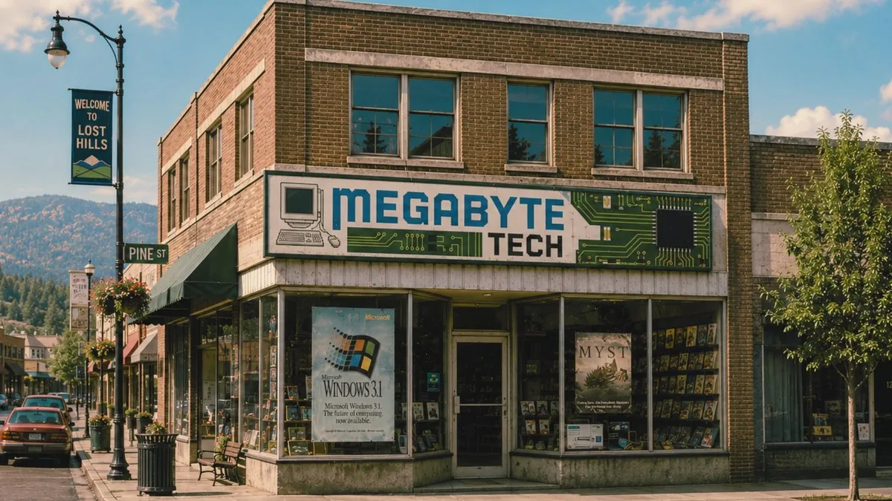

CityNet :> Home
Welcome to Lost Hills, Washington
Lost Hills Online is the official municipal information network of the City of Lost Hills. Launched in May 1993 as a civic technology pilot in partnership with Shadewater Labs, Megabyte Computers, Northwestern Interstate Bank, and the Lost Hills Chamber of Commerce, CityNet provides residents and visitors with public records, civic notices, business listings, and community resources.

// city_panorama_1992.jpg · City of Lost Hills, Washington · downtown looking east from sign hill · restored from B12
■
Admin Terminal — citynet03 / EACS v1.1
_
☐
×
EMERGENCY ARCHIVE CONTINUITY SYSTEM — RECONNECTION EVENT DETECTED
This archive was placed in emergency standby on May 22, 1993, following an unscheduled event.
Connection has been re-established after an extended dormancy period of unknown cause.
The system you are reading should not still be online.
Please report archive inconsistencies to the City Clerk's Office.
| // system | Shadewater EACS v1.1 — Municipal Archive Backup Node |
| // node | citynet03 (mirror) · volume B12 (degraded) |
| // last active | 05.22.1993 — 03:17:04 PDT |
| // standby | calculating… |
| // reconnected | [establishing…] |
| // source | field terminal — not on personnel list |
| // integrity | partial — some records restored from B12 with checksum mismatch |
Civic Notices & Announcements
- 05/17/1993 CHILDREN'S CARE WING DEDICATION
-
Mayor Cordell joins Shadewater Labs and Lost Hills Regional Medical Center for the
ribbon cutting of the new Children's Care Wing at 10:00 AM. Public welcome.
See News Archive.
 // childrens_care_wing_ribbon_051793.jpg · 10:00 AM, May 17, 1993 · full story »
// childrens_care_wing_ribbon_051793.jpg · 10:00 AM, May 17, 1993 · full story » - 05/17/1993 SHADEWATER APPLIED SYSTEMS CONFERENCE BEGINS
-
The five-day Shadewater Applied Systems Conference opens
today at the Sezzler Lost Hills Conference Resort. Civic, industry, and educational
delegates from across the region are welcomed by the City of Lost Hills.
 // sasc_1993_banner.jpg · The Future Works Here · May 17–21, 1993 · full schedule & packet »
// sasc_1993_banner.jpg · The Future Works Here · May 17–21, 1993 · full schedule & packet » - 05/17/1993 CITY SERVICE REFORM ANNOUNCED
- The City Council has approved the Municipal Service Reform Initiative, modernizing records, emergency response, and public access systems in cooperation with Shadewater Labs. Public information sessions begin this week.
- 05/18/1993 PHONE SERVICE INTERRUPTIONS, EAST DISTRICTS
- Pacific Coast Telephone reports brief intermittent outages affecting payphones along Catfish Lake Road and the East Plaza area. Service expected to normalize by evening.
- 05/19/1993 CATFISH LAKE ACCESS — PERMIT WINDOW
- Effective immediately, lake access requires updated permits issued through Benthic Gas & Food Mart. Boat launch hours are SEE CLERK. Environmental monitoring crews remain on site through the conference.
- 05/20/1993 CLOCK SYNCHRONIZATION ADVISORY
- Residents have reported clocks pausing or running slow in the downtown core. The City requests reports to the Clerk's Office. Shadewater Labs is consulting. No further reports expected.
- 05/21/1993 [ARCHIVE NOTE: ENTRY REMOVED AT REQUEST OF CLERK]
- Notice withdrawn. Backup restoration introduced unverified content; entry held pending review. ×notice_052193_final.html
- ??/??/199? CITYNET PUBLIC ACCESS TERMINALS
-
Free public access to Lost Hills Online is available at the
Lost Hills Public Library, the Sezzler lobby, North Plaza, and Jeff's
Supermarket courtesy of Megabyte Computers.

// megabyte_tech_pine_st.jpg · Megabyte Computers, 16 North Plaza · CityNet terminal program partner · date of photo unverified
Visitors
000317
since restoration
What's New
- 1993 Systems Conf. archive online
- CommunityNet message board reopened
- MOFA — "The Shape of Distance" digital exhibit
- Catfish Lake permit advisory
- News Archive partial restore complete
Best Viewed In
Netscape Navigator 2.0+
Internet Explorer 3.0+